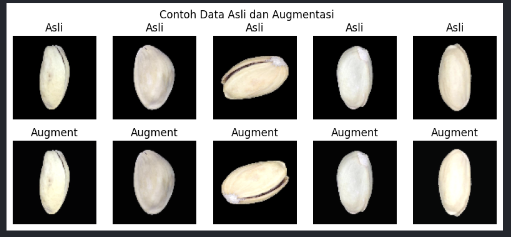
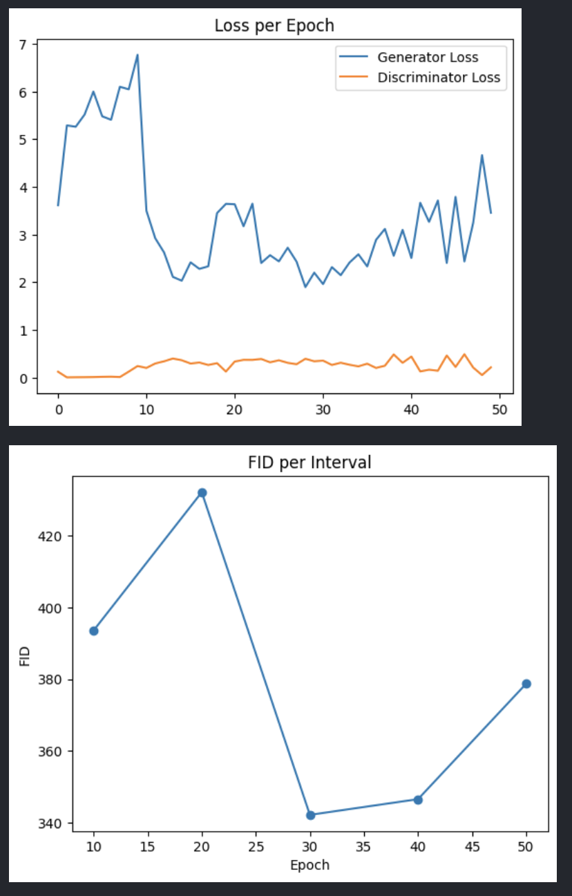

Project Showcase
Highlight of my featured works
🥜📷🤖 GAN for Pistachio Image Generation
A Generative Adversarial Network (GAN) trained to generate synthetic pistachio images for dataset augmentation and experimentation.



🎯 What I Learned
- Built a GAN for synthetic pistachio image generation
- Applied FID score using InceptionV3 for evaluation
- Balanced generator and discriminator training
🛠 Tech Stack
- Python, NumPy, Matplotlib
- OpenCV, PIL
- Scikit-learn
- TensorFlow / Keras, Keras Tuner
📌 Evaluation / Next Step
The GAN produced sharper pistachio images and achieved lower FID scores after tuning, proving its effectiveness for data augmentation. However, diversity is still limited, and some outputs repeat patterns. Future improvements include DCGAN, Wasserstein GAN, and conditional GAN approaches.